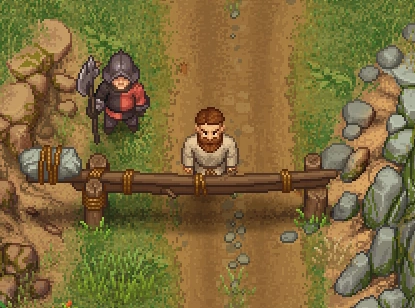

The Town
The town is located south of the The Dead Horse. Follow the road and you will reach the gate, which is initially blocked by the Guard.

Town pass to the guard.

| Icon | Cost | Notes |
|---|---|---|
| Town pass |
Required to pass the town guard and to enter the town (actually a joke and a useless item). Can be obtained from the Royal services box in the graveyard at 20 |
After doing so, you'll be able to pass the barrier a few steps, afterward you'll be struck down by lightning and the pass is gone ... What bad luck this is!
You see: The town is not worth visiting!
The town is often referred to but is not present in the game. Despite its non-existence, a lot of NPCs claim to live there: The Bishop, the Astrologer, the Inquisitor, the Merchant, and Snake. Even the donkey gets corpses from there. The town is not a in-game place, and therefore, there is no use to it
According to the developers, it was never planned to include it. When approaching the road to the town, the alpha version used a boilerplate template stating that the town was "not yet available" which made fans believe it to be a future location.
The lightning that strikes you deals 66666 damage, and as the number 666 is often seen as symbolic of the devil, conflated with the fact that Gerry says a dark force is trying to keep you out afterwards, it can be inferred that some kind of evil being is stopping you from entering the town.
| |||||